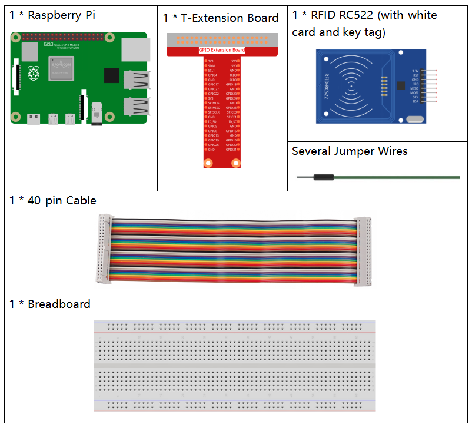

Bemerkung
Hallo und willkommen in der SunFounder Raspberry Pi & Arduino & ESP32 Enthusiasten-Gemeinschaft auf Facebook! Tauchen Sie tiefer ein in die Welt von Raspberry Pi, Arduino und ESP32 mit anderen Enthusiasten.
Warum beitreten?
Expertenunterstützung: Lösen Sie Nachverkaufsprobleme und technische Herausforderungen mit Hilfe unserer Gemeinschaft und unseres Teams.
Lernen & Teilen: Tauschen Sie Tipps und Anleitungen aus, um Ihre Fähigkeiten zu verbessern.
Exklusive Vorschauen: Erhalten Sie frühzeitigen Zugang zu neuen Produktankündigungen und exklusiven Einblicken.
Spezialrabatte: Genießen Sie exklusive Rabatte auf unsere neuesten Produkte.
Festliche Aktionen und Gewinnspiele: Nehmen Sie an Gewinnspielen und Feiertagsaktionen teil.
👉 Sind Sie bereit, mit uns zu erkunden und zu erschaffen? Klicken Sie auf [hier] und treten Sie heute bei!
2.2.10 MFRC522 RFID Modul
Einführung
Die Radiofrequenzidentifikation (RFID) bezieht sich auf Technologien, die kabellose Kommunikation zwischen einem Objekt (oder Tag) und einem abfragenden Gerät (oder Lesegerät) verwenden, um solche Objekte automatisch zu verfolgen und zu identifizieren.
Einige der häufigsten Anwendungen dieser Technologie sind Einzelhandels-Lieferketten, militärische Lieferketten, automatisierte Zahlungsmethoden, Gepäckverfolgung und -management, Dokumentenverfolgung und Pharmamanagement, um nur einige zu nennen.
In diesem Projekt verwenden wir RFID zum Lesen und Schreiben.
Benötigte Komponenten
Für dieses Projekt benötigen wir die folgenden Komponenten.
Schaltplan

Experimentelle Verfahren
Schritt 1: Bauen Sie den Schaltkreis.

Schritt 2: Aktivieren Sie das SPI, bevor Sie mit dem Experiment beginnen, siehe SPI-Konfiguration für Details.
Schritt 3: Gehen Sie in den Ordner mit dem Code.
cd ~/davinci-kit-for-raspberry-pi/python-pi5
Schritt 4: Führen Sie 2.2.10_write.py aus.
sudo python3 2.2.10_write.py
Schritt 5: Nach dem Start des Programms geben Sie den Text ein, den Sie schreiben möchten (bis zu 16 Zeichen), zum Beispiel „welcome“, und drücken Sie Enter zur Bestätigung. Danach wird die Meldung „Daten wurden auf die Karte geschrieben“ angezeigt. Drücken Sie schließlich Strg+C, um die Ausführung des Codes zu stoppen.
Please place your RFID card on the reader...
Press Ctrl-C to stop.
RFID card detected!
Card UID: 9BF6210B
Please enter data to write to the card (up to 16 characters): welcome
Block 8 authentication successful
4 backdata &0x0F == 0x0A 10
Data written
Data has been written to the card
Reading data from block 8:
Sector 8 [119, 101, 108, 99, 111, 109, 101, 0, 0, 0, 0, 0, 0, 0, 0, 0]
Schritt 6: Führen Sie nun 2.2.10_read.py aus, um die Informationen des Tags oder der Karte zu lesen, die Sie geschrieben haben.
sudo python3 2.2.10_read.py
Schritt 7: Nach dem Start erhalten Sie die folgenden Informationen.
Please place your RFID card on the reader...
Press Ctrl-C to stop.
RFID card detected!
Card UID: 9BF6210B
Block 8 authentication successful
Sector 8 [119, 101, 108, 99, 111, 109, 101, 0, 0, 0, 0, 0, 0, 0, 0, 0]
MFRC522_Read return type: <class 'int'>, Data: [119, 101, 108, 99, 111, 109, 101, 0, 0, 0, 0, 0, 0, 0, 0, 0]
Sector 8 [119, 101, 108, 99, 111, 109, 101, 0, 0, 0, 0, 0, 0, 0, 0, 0]
Read data: welcome
Code-Analyse für 2.2.10_write.py
Dieses Python-Skript schreibt vom Benutzer bereitgestellte Daten auf eine RFID-Karte unter Verwendung des MFRC522-RFID-Lesegeräts. Das Skript überprüft kontinuierlich die Anwesenheit einer Karte, fordert den Benutzer zur Eingabe der zu schreibenden Daten auf und bestätigt den erfolgreichen Schreib- und Lesevorgang.
Importanweisungen
MFRC522: Importiert Funktionen und Klassen, die für die Steuerung des RFID-Lesegeräts benötigt werden.signalundtime:signalwird verwendet, um eine sichere Beendigung über SIGINT (Strg+C) zu ermöglichen, undtimefügt Verzögerungen in der Hauptschleife hinzu.
Globale Variable
continue_reading: Steuert die Hauptschleife und ermöglicht es dem Skript, sich sicher zu beenden, wenn es aufFalsegesetzt wird.
continue_reading = True
Signalbehandlung:
Funktion
end_read: Diese Funktion wird ausgelöst, wennStrg+C(SIGINT) erkannt wird. Sie setztcontinue_readingaufFalse, sodass das Skript sicher beendet werden kann.signal.signal(signal.SIGINT, end_read): Bindet das SIGINT-Signal (Strg+C) anend_read, sodass bei einer Unterbrechung eine Meldung angezeigt und das Skript sicher beendet wird.
signal.signal(signal.SIGINT, end_read)
RFID-Lesegerät Setup:
rfid_reader: Eine Instanz derMFRC522-Klasse, die für die Steuerung des RFID-Lesegeräts verwendet wird.default_key: Ein 6-Byte-Schlüssel, normalerweise0xFFfür jedes Byte. Dies ist der Standard-Authentifizierungsschlüssel für die meisten RFID-Karten.
# Erstellen einer Instanz der MFRC522-Klasse rfid_reader = MFRC522.MFRC522() # Definieren des Standardschlüssels (6 Bytes, Standard ist alles 0xFF) default_key = [0xFF, 0xFF, 0xFF, 0xFF, 0xFF, 0xFF]
Benutzeranweisungen
Das Skript gibt Anweisungen in der Konsole aus und informiert den Benutzer, die RFID-Karte auf den Leser zu legen und
Strg+Czu verwenden, um das Programm zu beenden.print("Bitte legen Sie Ihre RFID-Karte auf den Leser...") print("Drücken Sie Strg-C zum Stoppen.")
Hauptschleife: Erkennung, Schreiben und Lesen von Daten
Kartenerkennung: Das Skript ruft kontinuierlich
MFRC522_Requestauf, um RFID-Karten zu erkennen. Wenn eine Karte erkannt wird (status == rfid_reader.MI_OK), fährt das Skript mit dem nächsten Schritt fort.
(status, TagType) = rfid_reader.MFRC522_Request(rfid_reader.PICC_REQIDL) # Wenn eine Karte erkannt wird if status == rfid_reader.MI_OK: print("RFID-Karte erkannt!") ... else: # Kurze Wartezeit vor erneutem Versuch time.sleep(0.5)
Abrufen der Karten-UID: Ruft
MFRC522_SelectTagSNauf, um die eindeutige Kennung (UID) der Karte abzurufen. Wenn erfolgreich, wird die UID in eine hexadezimale Zeichenfolge umgewandelt und ausgegeben. Die UID ist für die Authentifizierung erforderlich.
(status, uid) = rfid_reader.MFRC522_SelectTagSN() # Wenn die UID vorhanden ist, fortfahren if status == rfid_reader.MI_OK: # UID ausgeben uid_str = ''.join(['%02X' % i for i in uid]) print("Karten-UID: %s" % uid_str) ... else: print("Karten-UID konnte nicht abgerufen werden")
Datenvorbereitung:
Benutzereingabe: Der Benutzer wird aufgefordert, Daten einzugeben, die auf die Karte geschrieben werden sollen (bis zu 16 Zeichen).
Datenkürzung: Die Daten werden auf 16 Zeichen gekürzt, falls der Benutzer mehr eingibt.
String-zu-Byte-Konvertierung: Die Benutzereingabe wird in eine Byte-Liste konvertiert und auf 16 Bytes aufgefüllt, wie es das Speicherformat der RFID-Karte erfordert.
write_data = input("Bitte geben Sie die Daten ein, die auf die Karte geschrieben werden sollen (bis zu 16 Zeichen): ") # Sicherstellen, dass die Daten 16 Zeichen nicht überschreiten write_data = write_data[:16] # String in Byte-Liste konvertieren, auf 16 Bytes auffüllen data_to_write = [0x00]*16 string_bytes = write_data.encode('utf-8') for i in range(len(string_bytes)): data_to_write[i] = string_bytes[i]
Blocknummer angeben: Das Skript legt Block 8 als Ziel zum Schreiben der Daten fest. Hinweis: Blocknummern sollten die „Sektortrailer“-Blöcke, normalerweise der letzte Block in jedem Sektor, vermeiden, da diese für Steuerinformationen verwendet werden.
block_num = 8 # Zum Beispiel Block 8
Karten-Authentifizierung:
MFRC522_Authauthentifiziert den angegebenen Block mit dem Standard-Schlüssel und der UID. Bei erfolgreicher Authentifizierung wird der Schreibvorgang fortgesetzt. Andernfalls wird eine Fehlermeldung ausgegeben und die Verschlüsselung beendet.
status = rfid_reader.MFRC522_Auth(rfid_reader.PICC_AUTHENT1A, block_num, default_key, uid) if status == rfid_reader.MI_OK: print("Authentifizierung von Block %d erfolgreich" % block_num) ... else: print("Authentifizierung fehlgeschlagen") rfid_reader.MFRC522_StopCrypto1()
Daten auf die Karte schreiben:
MFRC522_Writeschreibt die vorbereiteten Daten auf den angegebenen Block der RFID-Karte. Nach dem Schreiben bestätigt eine Nachricht den erfolgreichen Schreibvorgang.
rfid_reader.MFRC522_Write(block_num, data_to_write) print("Daten wurden auf die Karte geschrieben")
Daten zurücklesen: Um den Schreibvorgang zu überprüfen, liest das Skript die Daten aus demselben Block mit
MFRC522_Read. Die zurückgelesenen Daten werden ausgegeben, damit der Benutzer die Daten überprüfen kann.
print("Daten aus Block %d lesen:" % block_num) rfid_reader.MFRC522_Read(block_num)
Verschlüsselung beenden:
MFRC522_StopCrypto1beendet den Verschlüsselungsprozess nach Abschluss der Vorgänge. Dieser Schritt ist notwendig, um den Kommunikationsstatus der Karte zurückzusetzen.
# Verschlüsselung beenden rfid_reader.MFRC522_StopCrypto1()
Schleife beenden: Nach dem Schreiben und Überprüfen der Daten wird
continue_readingaufFalsegesetzt, um die Schleife zu beenden und das Skript zu stoppen.continue_reading = False
Wichtige Punkte
Sichere Beendigung: Das Skript erfasst SIGINT (Strg+C), um sicher zu beenden und eine Nachricht anzuzeigen. Dies ermöglicht es, dass alle laufenden Vorgänge abgeschlossen werden, bevor das Skript beendet wird.
Benutzerinteraktion: Fordert den Benutzer zur Eingabe auf, sodass die Daten bei jedem Schreibvorgang individuell angepasst werden können.
Authentifizierung: Sichert den Zugriff auf den angegebenen Block und behandelt Authentifizierungsfehler auf sichere Weise.
Datenformatierung: Konvertiert Zeichenfolgendaten in ein Byte-Listenformat, das mit der Speicherstruktur der Karte kompatibel ist, und fügt bei Bedarf Auffüllbytes hinzu.
Überprüfung: Liest Daten von der Karte zurück, um einen erfolgreichen Schreibvorgang zu bestätigen, was die Zuverlässigkeit erhöht.
Modularität: Das Skript ist gut strukturiert mit klaren Funktionen zur Erkennung, zum Schreiben und zum Lesen, was das Verständnis und die Wartung erleichtert.
Dieses Skript eignet sich für Anwendungen, die Lese- und Schreibfunktionen mit RFID-Karten erfordern, wie z. B. Zugangskontrolle oder Benutzeridentifikation.
Code-Erklärung für 2.2.10_read.py
Dieses Python-Skript verwendet einen RFID-Leser (MFRC522), um Daten von RFID-Karten auszulesen. Das Skript ist so strukturiert, dass es kontinuierlich nach Karten sucht, deren Daten abruft und durch Signalerfassung eine reibungslose Beendigung bei Beenden-Anfragen (z.B. durch Strg+C) ermöglicht.
Importanweisungen:
MFRC522: Dieses Modul stellt Methoden bereit, um mit dem MFRC522-RFID-Leser zu interagieren.signalundtime: Dienen zur Handhabung der Skriptbeendigung (z.B. durchStrg+C) und zur Steuerung der Zeit zwischen bestimmten Operationen.
Globale Variablen:
continue_reading: Ein boolesches Flag, das die Hauptleseschleife steuert und es dem Skript ermöglicht, bei Betätigung vonStrg+Creibungslos zu stoppen.
continue_reading = True
Signalerfassung:
end_read-Funktion: Diese Funktion wird aktiviert, wennStrg+C(SIGINT) erkannt wird. Sie setztcontinue_readingaufFalse, wodurch das Skript reibungslos beendet werden kann.signal.signal(signal.SIGINT, end_read): Verbindet das SIGINT-Signal (Strg+C) mitend_read, sodass das Skript eine Nachricht anzeigt und geordnet beendet wird.
signal.signal(signal.SIGINT, end_read)
Einrichtung des RFID-Lesers:
rfid_reader: Eine Instanz der KlasseMFRC522, die zur Steuerung der RFID-Leservorgänge dient.default_key: Ein 6-Byte-Schlüssel, normalerweise für jedes Byte0xFF. Dies ist der Standardschlüssel zur Authentifizierung bei den meisten RFID-Karten.block_num: Gibt die Blocknummer an, die von der RFID-Karte gelesen werden soll; hier ist Block8angegeben. Die Blocknummer muss mit der beim Schreiben der Daten auf die Karte verwendeten übereinstimmen.
# Erstelle eine Instanz der MFRC522-Klasse rfid_reader = MFRC522.MFRC522() # Definiere den Standardschlüssel (6 Bytes, Standard ist 0xFF) default_key = [0xFF, 0xFF, 0xFF, 0xFF, 0xFF, 0xFF] # Definiere die Blocknummer zum Lesen (muss mit dem Schreibblock übereinstimmen) block_num = 8 # Zum Beispiel Block 8
Benutzeranweisungen
Das Skript gibt Anweisungen auf der Konsole aus, die den Benutzer auffordern, seine RFID-Karte auf den Leser zu legen und mit
Strg+Cdas Skript zu beenden.print("Bitte legen Sie Ihre RFID-Karte auf den Leser...") print("Drücken Sie Strg+C zum Beenden.")
Hauptschleife: Erkennung und Datenauslesung der RFID-Karte.
Scannen nach Karten: Die Hauptschleife ruft kontinuierlich
MFRC522_Requestauf, um nach RFID-Karten zu scannen. Wenn eine Karte erkannt wird, fährt sie mit den nächsten Schritten fort.(status, TagType) = rfid_reader.MFRC522_Request(rfid_reader.PICC_REQIDL) if status == rfid_reader.MI_OK: print("RFID-Karte erkannt!") ... else: # Wenn keine Karte erkannt wird, kurz warten und dann erneut versuchen time.sleep(0.5)
Abrufen der Karten-UID: Verwendet
MFRC522_SelectTagSNzur Abfrage der eindeutigen Kennung (UID) der Karte. Bei erfolgreicher Abfrage wird die UID in einen hexadezimalen String umgewandelt und ausgegeben. Diese UID ist für die Authentifizierung der Karte notwendig.(status, uid) = rfid_reader.MFRC522_SelectTagSN() # Wenn UID erfolgreich abgerufen wurde, fortfahren if status == rfid_reader.MI_OK: # UID-Liste in einen hexadezimalen String umwandeln uid_str = ''.join(['%02X' % i for i in uid]) print("Karten-UID: %s" % uid_str) ... else: print("Karten-UID konnte nicht abgerufen werden")
Authentifizierung der Karte:
MFRC522_Authauthentifiziert den Zugriff auf den angegebenen Block unter Verwendung des Standardschlüssels und der UID der Karte. Bei erfolgreicher Authentifizierung geht das Skript zum Lesen der Daten über.status = rfid_reader.MFRC522_Auth(rfid_reader.PICC_AUTHENT1A, block_num, default_key, uid) if status == rfid_reader.MI_OK: print("Authentifizierung für Block %d erfolgreich" % block_num) ... else: print("Authentifizierung fehlgeschlagen, Statuscode: %s" % status) rfid_reader.MFRC522_StopCrypto1()
Daten auslesen:
MFRC522_Readliest die Daten vom angegebenen Block.data: Diese Variable enthält die Rohdaten des Blocks, wenn die Leseoperation erfolgreich ist.Das Skript wandelt jedes Byte in
datain Zeichen um und entfernt eventuell vorhandene Nullbytes (\x00) als Füllzeichen. Die verarbeiteten Daten werden dann ausgegeben.
read_status, data = rfid_reader.MFRC522_Read(block_num) print(f"MFRC522_Read Rückgabetyp: {type(read_status)}, Daten: {data}") if read_status == rfid_reader.MI_OK and data: print(f"Sektor {block_num} {data}") # Byte-Daten in String umwandeln und Füllbytes entfernen read_data = ''.join([chr(byte) for byte in data]).rstrip('\x00') print("Gelesene Daten: %s" % read_data) else: print("Datenlesen fehlgeschlagen, Statuscode: %s" % read_status)
MFRC522_StopCrypto1wird aufgerufen, um die Verschlüsselung zu stoppen und die Kartenkommunikation zurückzusetzen.# Verschlüsselung auf der Karte stoppen rfid_reader.MFRC522_StopCrypto1()
Warten zwischen Lesedurchläufen: Wenn keine Karte erkannt wird, pausiert die Schleife 0,5 Sekunden, bevor erneut versucht wird.
else: # Wenn keine Karte erkannt wird, kurz warten und dann erneut versuchen time.sleep(0.5)
Wichtige Punkte
Geordnete Beendigung: Das Skript fängt das
SIGINT-Signal auf, um eine geordnete Beendigung zu ermöglichen, wodurch der RFID-Leser laufende Vorgänge beenden kann.Block- und UID-Verwaltung: Verwendet Block und UID als Schlüsselfaktoren beim Lesen der Daten von einer RFID-Karte und handhabt Authentifizierungs- sowie Lese-Fehler ordnungsgemäß.
Modulares Design: Die Verwendung dedizierter Funktionen aus dem
MFRC522-Modul macht das Skript übersichtlich und modular, was RFID-Operationen wie Authentifizierung und Datenauslesung vereinfacht.